水晶 をドロップするmob一覧
一覧ページへ
| ゴースト | アンデット | 一般1 | ||||||||
 | 笛(410) | 翼(10) | 鍵(10) | マント(230) | イヤリング(210) | ブローチ(150) | 水晶(410) | |||
| イリュージョン | アンデット | 一般2 | ||||||||
| 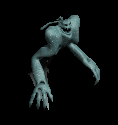 | 笛(380) | 翼(250) | 矢(380) | マント(210) | イヤリング(190) | ブローチ(160) | 水晶(380) | 魔弾(380) | ||
| ファントム | アンデット | 一般3 | ||||||||
 | 笛(360) | 翼(240) | 矢(360) | マント(200) | イヤリング(180) | ブローチ(170) | 水晶(240) | 魔弾(360) | ||
| バンシー | アンデット | セミ1 | ||||||||
 | 笛(390) | 翼(260) | イベント(390) | マント(220) | イヤリング(200) | ブローチ(180) | 水晶(260) | |||
| 幻影 | アンデット | ボス1 | ||||||||
 | 笛(470) | 翼(310) | 鍵(470) | マント(260) | イヤリング(240) | ブローチ(190) | 水晶(310) | |||
| 死霊魔術師 | アンデット | セミ1 | ||||||||
 | 杖(390) | 翼(260) | イベント(390) | グローブ(220) | 冠(200) | ブローチ(200) | 本(390) | 水晶(260) | ||
| レイス | アンデット | セミ2 | ||||||||
 | 杖(420) | 翼(280) | 状態異常回復1(420) | グローブ(230) | 冠(210) | ブローチ(250) | 本(420) | 水晶(280) | ||
| リッチ | アンデット | ボス2 | ||||||||
 | 杖(490) | 翼(330) | HP回復(490) | グローブ(270) | 冠(250) | ブローチ(400) | 本(490) | 水晶(330) | ||
| 偽伝道師 | 人間 | 一般2 | ||||||||
 | 鈍器(380) | 翼(250) | 盾(380) | 職業鎧(210) | 冠(190) | 十字架(180) | 水晶(250) | |||
| エクソシスト | 人間 | 一般3 | ||||||||
 | 鈍器(360) | 翼(240) | 状態異常回復2(90) | 職業鎧(200) | 冠(180) | 十字架(190) | 水晶(240) | |||
| 偽聖職者 | 人間 | 一般4 | ||||||||
 | 鈍器(300) | 翼(200) | 盾(300) | 職業鎧(170) | 首(150) | 十字架(200) | 水晶(200) | |||
| ダークプリースト | 人間 | セミ2 | ||||||||
 | 鈍器(420) | 翼(280) | 状態異常回復2(110) | 職業鎧(230) | 首(210) | 十字架(210) | 水晶(280) | |||
| ダークビショップ | 人間 | ボス2 | ||||||||
 | 鈍器(490) | 翼(330) | 盾(490) | 兜・帽子(270) | 首(250) | 十字架(220) | 水晶(330) | |||
| アイウィング | 悪魔 | 一般3 | ||||||||
 | 笛(360) | 翼(240) | 状態異常回復1(360) | 兜・帽子(200) | 冠(180) | 帰還(140) | 水晶(240) | |||
| ドゥームスフィア | 悪魔 | 一般4 | ||||||||
| 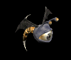 | 笛(300) | 翼(200) | 状態異常回復1(300) | 兜・帽子(170) | 首(150) | 帰還(120) | 水晶(200) | |||
| ビホルダー | 悪魔 | セミ2 | ||||||||
 | 投擲(420) | 翼(280) | 状態異常回復1(420) | 兜・帽子(230) | 冠(210) | 帰還(170) | 水晶(280) | |||
| アルゴス | 悪魔 | セミ3 | ||||||||
 | 笛(450) | 翼(300) | 鍵(450) | 兜・帽子(250) | 首(230) | 帰還(180) | 水晶(300) | |||
| オーバーシアー | 悪魔 | ボス2 | ||||||||
 | 投擲(490) | 翼(330) | CP回復(490) | 兜・帽子(270) | 冠(250) | 帰還(200) | 水晶(330) | |||
| ウェアーゴート | 悪魔 | 一般3 | ||||||||
 | 鞭(360) | 翼(240) | 鍵(20) | グローブ(200) | 指輪(180) | 宝石(140) | 水晶(240) | |||
| ホーンド | 悪魔 | セミ1 | ||||||||
 | ステッキ(390) | 翼(260) | 状態異常回復2(100) | マント(220) | 手首(200) | 宝石(160) | 水晶(260) | |||
| 蟲の群れ | 動物 | 一般1 | ||||||||
 | 笛(410) | 翼(270) | イベント(410) | グローブ(230) | イヤリング(210) | 帰還(160) | 水晶(270) | |||
| 鋏昆虫の群れ | 動物 | 一般2 | ||||||||
 | 笛(380) | 翼(250) | イベント(380) | 腰(210) | 首(190) | 帰還(150) | 水晶(250) | |||
| 殺人蚊の群れ | 動物 | 一般3 | ||||||||
 | 笛(360) | 翼(240) | イベント(360) | 足(200) | イヤリング(180) | 帰還(140) | 水晶(240) | |||
| イナゴの群れ | 動物 | セミ1 | ||||||||
 | 笛(390) | 翼(260) | イベント(390) | 兜・帽子(220) | 首(200) | 帰還(160) | 水晶(260) | |||
| ディザースター | 動物 | ボス1 | ||||||||
| 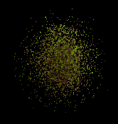 | 笛(470) | 翼(310) | イベント(470) | マント(260) | イヤリング(240) | 帰還(190) | 水晶(310) | |||
| キングベアー | 動物 | ボス1 | ||||||||
 | 翼(470) | 笛(310) | 鍵(30) | 兜・帽子(260) | 爪(240) | 宝石(190) | 水晶(470) | |||
| ガーゴイル | 神獣 | 一般1 | ||||||||
 | 水晶(270) | 鞭(410) | 翼(270) | |||||||
| マーブルガゴイル | 神獣 | 一般4 | ||||||||
 | 水晶(200) | 鞭(300) | 翼(200) | |||||||
| エボニーガゴイル | 神獣 | セミ1 | ||||||||
 | 水晶(260) | 鞭(390) | 翼(260) | |||||||
| オニキスガゴイル | 神獣 | セミ2 | ||||||||
 | 水晶(280) | 鞭(420) | 翼(280) | |||||||
| ディムジェスター | 神獣 | 一般2 | ||||||||
| 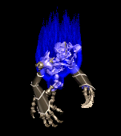 | 水晶(250) | 笛(380) | 翼(250) | |||||||
| ダークファイア | 神獣 | ボス1 | ||||||||
 | 箒(100) | 水晶(310) | 槍(100) | 翼(310) | ||||||
| ビビッドブラック | 神獣 | ボス3 | ||||||||
| 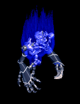 | 水晶(340) | スリング(510) | 翼(340) | |||||||
| ゴーストEx | アンデット | 一般1 | ||||||||
| 笛(410) | 翼(270) | 鍵(10) | マント(230) | イヤリング(210) | ブローチ(150) | 水晶(270) | |||
| イリュージョンEx | アンデット | 一般2 | ||||||||
| 笛(380) | 翼(250) | 矢(380) | マント(210) | イヤリング(190) | ブローチ(160) | 水晶(250) | 魔弾(380) | |||
| ファントムEx | アンデット | 一般3 | ||||||||
| 笛(360) | 翼(240) | 矢(360) | マント(200) | イヤリング(180) | ブローチ(170) | 水晶(240) | 魔弾(360) | ||
| バンシーEx | アンデット | セミ1 | ||||||||
| 笛(450) | 翼(300) | イベント(450) | マント(250) | イヤリング(230) | ブローチ(180) | 水晶(300) | |||
| 幻影Ex | アンデット | ボス1 | ||||||||
| 笛(1200) | 翼(800) | 鍵(1200) | マント(670) | イヤリング(600) | ブローチ(190) | 水晶(800) | |||
| 死霊魔術師Ex | アンデット | セミ1 | ||||||||
| 杖(450) | 翼(300) | イベント(450) | グローブ(250) | 冠(230) | 宝石(180) | 本(450) | 水晶(300) | ||
| レイスEx | アンデット | セミ2 | ||||||||
| 杖(650) | 翼(430) | 状態異常回復1(650) | グローブ(360) | 冠(330) | 宝石(260) | 本(650) | 水晶(430) | ||
| リッチEx | アンデット | ボス2 | ||||||||
| 杖(2000) | 翼(1330) | HP回復(2000) | グローブ(1110) | 冠(1000) | 宝石(800) | 本(2000) | 水晶(1330) | ||
| 偽伝道師Ex | 人間 | 一般2 | ||||||||
| 鈍器(380) | 翼(250) | 盾(380) | 職業鎧(210) | 冠(190) | 十字架(180) | 水晶(250) | |||
| エクソシストEx | 人間 | 一般3 | ||||||||
| 鈍器(360) | 翼(240) | 状態異常回復2(90) | 職業鎧(200) | 冠(180) | 十字架(190) | 水晶(240) | |||
| 偽聖職者Ex | 人間 | 一般4 | ||||||||
| 鈍器(300) | 翼(200) | 盾(300) | 職業鎧(170) | 首(150) | 十字架(200) | 水晶(200) | |||
| ダークプリーストEx | 人間 | セミ2 | ||||||||
| 鈍器(650) | 翼(430) | 状態異常回復2(160) | 職業鎧(360) | 首(330) | 十字架(210) | 水晶(430) | |||
| ダークビショップEx | 人間 | ボス2 | ||||||||
| 鈍器(2000) | 翼(1330) | 盾(2000) | 兜・帽子(1110) | 首(1000) | 十字架(220) | 水晶(1330) | |||
| アイウィングEx | 悪魔 | 一般3 | ||||||||
| 笛(360) | 翼(240) | 状態異常回復1(360) | 兜・帽子(200) | 冠(180) | 帰還(140) | 水晶(240) | |||
| ドゥームスフィアEx | 悪魔 | 一般4 | ||||||||
| 笛(300) | 翼(200) | 状態異常回復1(300) | 兜・帽子(170) | 首(150) | 帰還(120) | 水晶(200) | ||||
| ビホルダーEx | 悪魔 | セミ2 | ||||||||
| 投擲(650) | 翼(430) | 状態異常回復1(650) | 兜・帽子(360) | 冠(330) | 帰還(260) | 水晶(430) | |||
| アルゴスEx | 悪魔 | セミ3 | ||||||||
| 笛(800) | 翼(530) | 鍵(50) | 兜・帽子(440) | 首(400) | 帰還(320) | 水晶(530) | |||
| オーバーシアーEx | 悪魔 | ボス2 | ||||||||
| 投擲(2000) | 翼(1330) | CP回復(2000) | 兜・帽子(1110) | 冠(1000) | 帰還(800) | 水晶(1330) | |||
| ウェアーゴートEx | 悪魔 | 一般3 | ||||||||
| 鞭(360) | 翼(240) | 鍵(40) | グローブ(200) | 指輪(180) | 宝石(140) | 水晶(240) | |||
| ホーンドEx | 悪魔 | セミ1 | ||||||||
| ステッキ(450) | 翼(300) | 状態異常回復2(110) | マント(250) | 手首(230) | 宝石(180) | 水晶(300) | |||
| 蟲の群れEx | 動物 | 一般1 | ||||||||
| 笛(410) | 翼(270) | イベント(410) | グローブ(230) | イヤリング(210) | 帰還(160) | 水晶(270) | |||
| 鋏昆虫の群れEx | 動物 | 一般2 | ||||||||
| 笛(380) | 翼(250) | イベント(380) | 腰(210) | 首(190) | 帰還(150) | 水晶(250) | |||
| 殺人蚊の群れEx | 動物 | 一般3 | ||||||||
| 笛(360) | 翼(240) | イベント(360) | 足(200) | イヤリング(180) | 帰還(140) | 水晶(240) | |||
| イナゴの群れEx | 動物 | セミ1 | ||||||||
| 笛(450) | 翼(300) | イベント(450) | 兜・帽子(250) | 首(230) | 帰還(180) | 水晶(300) | |||
| ディザースターEx | 動物 | ボス1 | ||||||||
| 笛(1200) | 翼(800) | イベント(1200) | マント(670) | イヤリング(600) | 帰還(480) | 水晶(800) | ||||
| キングベアーEx | 動物 | ボス1 | ||||||||
| 翼(1200) | 笛(800) | 鍵(200) | 兜・帽子(670) | 爪(600) | 宝石(480) | 水晶(1200) | |||
| ガーゴイルEx | 神獣 | 一般1 | ||||||||
| 鞭(410) | 翼(270) | 鍵(10) | 兜・帽子(230) | 爪(210) | 能力向上1(160) | 水晶(270) | |||
| マーブルガゴイルEx | 神獣 | 一般4 | ||||||||
| 鞭(300) | 翼(200) | 鍵(10) | 兜・帽子(170) | 爪(150) | 能力向上1(120) | 水晶(200) | |||
| エボニーガゴイルEx | 神獣 | セミ1 | ||||||||
| 鞭(450) | 翼(300) | 鍵(20) | 兜・帽子(250) | 爪(230) | 能力向上1(180) | 水晶(300) | |||
| オニキスガゴイルEx | 神獣 | セミ2 | ||||||||
| 鞭(650) | 翼(430) | 鍵(40) | 兜・帽子(360) | 爪(330) | 能力向上1(260) | 水晶(430) | |||
| ディムジェスターEx | 神獣 | 一般2 | ||||||||
| 笛(380) | 翼(250) | 盾(380) | 兜・帽子(210) | 指輪(190) | 特殊1(150) | 水晶(250) | ||||
| ダークファイアEx | 神獣 | ボス1 | ||||||||
| 槍(1200) | 翼(800) | HP回復(1200) | 職業鎧(670) | 指輪(600) | 特殊1(480) | 箒(1200) | 水晶(800) | ||
| ビビッドブラックEx | 神獣 | ボス3 | ||||||||
| スリング(2800) | 翼(1870) | 弾(2800) | 兜・帽子(1560) | イヤリング(1400) | 特殊1(1120) | 水晶(1870) | ||||
| ゴーストZin | アンデット | 一般1 | ||||||||
| 笛(1210) | 翼(810) | 鍵(70) | マント(670) | イヤリング(610) | ブローチ(150) | 水晶(810) | |||
| イリュージョンZin | アンデット | 一般2 | ||||||||
| 笛(1380) | 翼(920) | 矢(1380) | マント(770) | イヤリング(690) | ブローチ(160) | 水晶(920) | 魔弾(1380) | |||
| ファントムZin | アンデット | 一般3 | ||||||||
| 笛(1560) | 翼(1040) | 矢(1560) | マント(870) | イヤリング(780) | ブローチ(170) | 水晶(1040) | 魔弾(1560) | ||
| バンシーZin | アンデット | セミ1 | ||||||||
| 笛(650) | 翼(430) | イベント(650) | マント(360) | イヤリング(330) | ブローチ(180) | 水晶(430) | |||
| 幻影Zin | アンデット | ボス1 | ||||||||
| 笛(1000) | 翼(670) | 鍵(160) | マント(560) | イヤリング(500) | ブローチ(190) | 水晶(670) | |||
| 死霊魔術師Zin | アンデット | セミ1 | ||||||||
| 杖(650) | 翼(430) | イベント(650) | グローブ(360) | 冠(330) | 宝石(260) | 本(650) | 水晶(430) | ||
| レイスZin | アンデット | セミ2 | ||||||||
| 杖(750) | 翼(500) | 状態異常回復1(750) | グローブ(420) | 冠(380) | 宝石(300) | 本(750) | 水晶(500) | ||
| リッチZin | アンデット | ボス2 | ||||||||
| 杖(1100) | 翼(730) | HP回復(1100) | グローブ(610) | 冠(550) | 宝石(440) | 本(1100) | 水晶(730) | ||
| 偽伝道師Zin | 人間 | 一般2 | ||||||||
| 鈍器(1380) | 翼(920) | 盾(1380) | 職業鎧(770) | 冠(690) | 十字架(180) | 水晶(920) | |||
| エクソシストZin | 人間 | 一般3 | ||||||||
| 鈍器(1560) | 翼(1040) | 状態異常回復2(390) | 職業鎧(870) | 冠(780) | 十字架(190) | 水晶(1040) | |||
| 偽聖職者Zin | 人間 | 一般4 | ||||||||
| 鈍器(1200) | 翼(800) | 盾(1200) | 職業鎧(670) | 首(600) | 十字架(200) | 水晶(800) | |||
| ダークプリーストZin | 人間 | セミ2 | ||||||||
| 鈍器(750) | 翼(500) | 状態異常回復2(190) | 職業鎧(420) | 首(380) | 十字架(210) | 水晶(500) | |||
| ダークビショップZin | 人間 | ボス2 | ||||||||
| 鈍器(1100) | 翼(730) | 盾(1100) | 兜・帽子(610) | 首(550) | 十字架(220) | 水晶(730) | |||
| アイウィングZin | 悪魔 | 一般3 | ||||||||
| 笛(1560) | 翼(1040) | 状態異常回復1(1560) | 兜・帽子(870) | 冠(780) | 帰還(620) | 水晶(1040) | |||
| ドゥームスフィアZin | 悪魔 | 一般4 | ||||||||
| 笛(1200) | 翼(800) | 状態異常回復1(1200) | 兜・帽子(670) | 首(600) | 帰還(480) | 水晶(800) | ||||
| ビホルダーZin | 悪魔 | セミ2 | ||||||||
| 投擲(750) | 翼(500) | 状態異常回復1(750) | 兜・帽子(420) | 冠(380) | 帰還(300) | 水晶(500) | |||
| アルゴスZin | 悪魔 | セミ3 | ||||||||
| 笛(900) | 翼(600) | 鍵(40) | 兜・帽子(500) | 首(450) | 帰還(360) | 水晶(600) | |||
| オーバーシアーZin | 悪魔 | ボス2 | ||||||||
| 投擲(1100) | 翼(730) | CP回復(1100) | 兜・帽子(610) | 冠(550) | 帰還(440) | 水晶(730) | |||
| ウェアーゴートZin | 悪魔 | 一般3 | ||||||||
| 鞭(1560) | 翼(1040) | 鍵(1560) | グローブ(870) | 指輪(780) | 宝石(620) | 水晶(1040) | |||
| ホーンドZin | 悪魔 | セミ1 | ||||||||
| ステッキ(650) | 翼(430) | 状態異常回復2(160) | マント(360) | 手首(330) | 宝石(260) | 水晶(430) | |||
| 蟲の群れZin | 動物 | 一般1 | ||||||||
| 笛(1210) | 翼(810) | イベント(1210) | グローブ(670) | イヤリング(610) | 帰還(480) | 水晶(810) | |||
| 鋏昆虫の群れZin | 動物 | 一般2 | ||||||||
| 笛(1380) | 翼(920) | イベント(1380) | 腰(770) | 首(690) | 帰還(550) | 水晶(920) | |||
| 殺人蚊の群れZin | 動物 | 一般3 | ||||||||
| 笛(1560) | 翼(1040) | イベント(1560) | 足(870) | イヤリング(780) | 帰還(620) | 水晶(1040) | |||
| イナゴの群れZin | 動物 | セミ1 | ||||||||
| 笛(650) | 翼(430) | イベント(650) | 兜・帽子(360) | 首(330) | 帰還(260) | 水晶(430) | |||
| ディザースターZin | 動物 | ボス1 | ||||||||
| 笛(1000) | 翼(670) | イベント(1000) | マント(560) | イヤリング(500) | 帰還(400) | 水晶(670) | ||||
| キングベアーZin | 動物 | ボス1 | ||||||||
| 翼(1000) | 笛(670) | 鍵(130) | 兜・帽子(560) | 爪(500) | 宝石(400) | 水晶(1000) | |||
| ガーゴイルZin | 神獣 | 一般1 | ||||||||
| 鞭(1210) | 翼(810) | 鍵(20) | 兜・帽子(670) | 爪(610) | 能力向上1(480) | 水晶(810) | |||
| マーブルガゴイルZin | 神獣 | 一般4 | ||||||||
| 鞭(1200) | 翼(800) | 鍵(40) | 兜・帽子(670) | 爪(600) | 能力向上1(480) | 水晶(800) | |||
| エボニーガゴイルZin | 神獣 | セミ1 | ||||||||
| 鞭(650) | 翼(430) | 鍵(60) | 兜・帽子(360) | 爪(330) | 能力向上1(260) | 水晶(430) | |||
| オニキスガゴイルZin | 神獣 | セミ2 | ||||||||
| 鞭(750) | 翼(500) | 鍵(80) | 兜・帽子(420) | 爪(380) | 能力向上1(300) | 水晶(500) | |||
| ディムジェスターZin | 神獣 | 一般2 | ||||||||
| 笛(1380) | 翼(920) | 盾(1380) | 兜・帽子(770) | 指輪(690) | 特殊1(550) | 水晶(920) | ||||
| ダークファイアZin | 神獣 | ボス1 | ||||||||
| 槍(1000) | 翼(670) | HP回復(1000) | 職業鎧(560) | 指輪(500) | 特殊1(400) | 箒(1000) | 水晶(670) | ||
| ビビッドブラックZin | 神獣 | ボス3 | ||||||||
| スリング(1200) | 翼(800) | 弾(1200) | 兜・帽子(670) | イヤリング(600) | 特殊1(480) | 水晶(800) | ||||
| シーク信者(踊り子) Zin | 人間 | 一般3 | ||||||||
 | 鎧(70) | ブローチ(200) | 弾(130) | 十字架(100) | 腰(30) | 翼(40) | 水晶(40) | |||
| シーク信者(踊り子)2 Zin | 人間 | セミ3 | ||||||||
 | 鎧(180) | 首(530) | スリング(350) | 鎧(280) | 腰(70) | 翼(110) | 水晶(110) | |||
| シーク信者(踊り子)3 Zin | 人間 | ボス2 | ||||||||
| 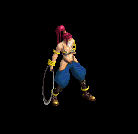 | 鎧(450) | 首(1350) | CP回復(900) | 手首(720) | 腰(180) | 翼(270) | 水晶(270) | |||
| シーク信者(踊り子)4 Zin | 人間 | ボス3 | ||||||||
 | 鎧(600) | 首(1800) | スリング(1200) | 手首(960) | 腰(240) | 翼(360) | 水晶(360) | |||
| シーク守護者 Zin | 人間 | 一般4 | ||||||||
| 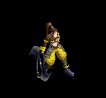 | 鎧(50) | 首(150) | 帰還(100) | マント(80) | 腕刺青(20) | 翼(30) | 水晶(30) | |||
| シーク守護者2 Zin | 人間 | セミ3 | ||||||||
 | 鍵(180) | 状態異常回復2(530) | スリング(350) | 鎧(280) | 腰(70) | 翼(110) | 水晶(110) | |||
| シーク守護者4 Zin | 人間 | ボス3 | ||||||||
 | 鎧(600) | ブローチ(1800) | スリング(1200) | 手首(960) | 腰(240) | 翼(360) | 水晶(360) | |||
| シーク天使 Zin | 人間 | 一般3 | ||||||||
 | 鎧(70) | 首(200) | 帰還(130) | 手首(100) | 腰(30) | 翼(40) | 水晶(40) | |||
| シーク天使1 Zin | 人間 | セミ1 | ||||||||
 | 鎧(90) | 首(260) | スリング(180) | 手首(140) | 腰(40) | 翼(50) | 水晶(50) | |||
| シーク天使3 Zin | 人間 | ボス2 | ||||||||
 | 鎧(450) | ブローチ(1350) | スリング(900) | 手首(720) | 腰(180) | 翼(270) | 水晶(270) | |||
| シーク天使4 Zin | 人間 | ボス3 | ||||||||
 | 鎧(600) | 首(1800) | 腕刺青(1200) | 手首(960) | 腰(240) | 翼(360) | 水晶(360) | |||
| カマキリ戦士 Zin | 悪魔 | セミ2 | ||||||||
 | 宝石(360) | 宝石(440) | 弾(180) | 能力向上1(110) | 腰(60) | 翼(30) | 水晶(30) | |||
| カマキリ戦士1 Zin | 悪魔 | セミ3 | ||||||||
 | 投擲(460) | 鈍器(560) | 十字架(230) | 槍(140) | 肩刺青(70) | 翼(40) | 箒(140) | 水晶(40) | ||
| カマキリ戦士4 Zin | 悪魔 | ボス3 | ||||||||
 | 投擲(1560) | 鈍器(1920) | CP回復(790) | 槍(480) | 腰(240) | 翼(120) | 箒(480) | 水晶(120) | ||
| ペンティライダー Zin | 悪魔 | セミ1 | ||||||||
 | 鍵(230) | 弾(280) | 腕刺青(120) | 槍(70) | 状態異常回復1(40) | 翼(20) | 箒(70) | 水晶(20) | ||
| ペンティライダー1 Zin | 悪魔 | セミ2 | ||||||||
 | 投擲(360) | 鈍器(440) | 弾(180) | 槍(110) | 腰(60) | 翼(30) | 箒(110) | 水晶(30) | ||
| ペンティライダー2 Zin | 悪魔 | セミ3 | ||||||||
| 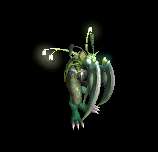 | 投擲(460) | 状態異常回復2(560) | CP回復(230) | 能力向上1(140) | 肩刺青(70) | 翼(40) | 水晶(40) | |||
| ペンティライダー4 Zin | 悪魔 | ボス3 | ||||||||
| 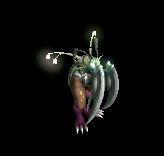 | 投擲(1560) | 鈍器(1920) | 弾(790) | 槍(480) | 両手剣(240) | 翼(120) | 鎌(240) | 箒(480) | 水晶(120) | |
| バッタ悪魔1 Zin | 悪魔 | セミ1 | ||||||||
 | 能力向上2(230) | CP回復(280) | 弾(120) | 槍(70) | 状態異常回復1(40) | 翼(20) | 箒(70) | 水晶(20) | ||
| バッタ悪魔3 Zin | 悪魔 | ボス1 | ||||||||
 | 宝石(650) | 鈍器(800) | 弾(330) | 能力向上1(200) | 腰(100) | 翼(50) | 水晶(50) | |||
| バッタ悪魔4 Zin | 悪魔 | ボス2 | ||||||||
 | 投擲(1170) | 状態異常回復2(1440) | CP回復(590) | 槍(360) | 腰(180) | 翼(90) | 箒(360) | 水晶(90) | ||
| ビッグモンキー Zin | 動物 | 一般4 | ||||||||
 | 冠(70) | イヤリング(50) | 牙(40) | 十字架(30) | 肩刺青(20) | 翼(10) | 双剣(40) | 水晶(10) | ||
| ビッグモンキー2 Zin | 動物 | セミ2 | ||||||||
 | 冠(190) | イヤリング(140) | 牙(110) | 能力向上1(80) | 矢(60) | 翼(30) | 双剣(110) | 水晶(30) | 魔弾(60) | |
| ルーンモンキー1 Zin | 動物 | ボス2 | ||||||||
| 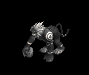 | 冠(630) | 状態異常回復2(450) | 帰還(360) | 能力向上1(270) | 矢(180) | 翼(90) | 水晶(90) | 魔弾(180) | ||
| マウンテン戦士1 Zin | 動物 | セミ2 | ||||||||
 | 鍵(190) | 状態異常回復2(140) | 腕刺青(110) | 能力向上1(80) | 矢(60) | 翼(30) | 水晶(30) | 魔弾(60) | ||
| マウンテン戦士2 Zin | 動物 | セミ3 | ||||||||
 | 冠(250) | ブローチ(180) | 宝石(140) | 職業鎧(110) | 状態異常回復1(70) | 翼(40) | 水晶(40) | |||
| マウンテン戦士3 Zin | 動物 | ボス2 | ||||||||
 | 冠(630) | イヤリング(450) | 帰還(360) | 職業鎧(270) | 矢(180) | 翼(90) | 水晶(90) | 魔弾(180) | ||
| ウィングコング1 Zin | 動物 | セミ2 | ||||||||
| 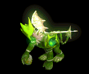 | 杖(190) | イヤリング(140) | 能力向上2(110) | 職業鎧(80) | 矢(60) | 翼(30) | 本(190) | 水晶(30) | 魔弾(60) | |
| ウィングコング3 Zin | 動物 | ボス2 | ||||||||
 | 能力向上2(630) | 状態異常回復2(450) | 牙(360) | 職業鎧(270) | 矢(180) | 翼(90) | 双剣(360) | 水晶(90) | 魔弾(180) | |
| ウィングコング4 Zin | 動物 | ボス3 | ||||||||
 | 冠(840) | イヤリング(600) | 宝石(480) | 職業鎧(360) | 矢(240) | 翼(120) | 水晶(120) | 魔弾(240) | ||
| ユニコーン Zin | 神獣 | 一般4 | ||||||||
 | 冠(90) | マント(130) | 牙(70) | 槍(10) | 弓(20) | 翼(50) | 箒(10) | 双剣(70) | 水晶(50) | 銃(20) |
| ユニコーン2 Zin | 神獣 | ボス1 | ||||||||
 | 能力向上2(450) | ブローチ(650) | 能力向上2(350) | 槍(50) | 弓(100) | 翼(250) | 箒(50) | 水晶(250) | 銃(100) | |
| ユニコーン4 Zin | 神獣 | ボス3 | ||||||||
 | 冠(1080) | マント(1560) | 宝石(840) | 鞭(120) | 弓(240) | 翼(600) | 水晶(600) | 銃(240) | ||
| ペガサス1 Zin | 神獣 | セミ1 | ||||||||
 | 杖(160) | ブローチ(230) | 牙(120) | 槍(20) | 弓(40) | 翼(90) | 本(160) | 箒(20) | 双剣(120) | 水晶(90) |
| ペガサス2 Zin | 神獣 | セミ3 | ||||||||
 | 冠(320) | マント(460) | 宝石(250) | 能力向上1(40) | 弓(70) | 翼(180) | 水晶(180) | 銃(70) | ||
| ペガサス3 Zin | 神獣 | ボス2 | ||||||||
 | 能力向上2(810) | マント(1170) | 腕刺青(630) | 槍(90) | 肩刺青(180) | 翼(450) | 箒(90) | 水晶(450) | ||
| ブルーウイング Zin | 神獣 | セミ1 | ||||||||
 | 冠(160) | マント(230) | 帰還(120) | 能力向上1(20) | 弓(40) | 翼(90) | 水晶(90) | 銃(40) | ||
| ブルーウイング1 Zin | 神獣 | セミ2 | ||||||||
 | 杖(250) | 状態異常回復2(360) | 牙(190) | 槍(30) | 弓(60) | 翼(140) | 本(250) | 箒(30) | 双剣(190) | 水晶(140) |
| ブルーウイング3 Zin | 神獣 | ボス2 | ||||||||
 | 冠(810) | ブローチ(1170) | 牙(630) | 槍(90) | 弓(180) | 翼(450) | 箒(90) | 双剣(630) | 水晶(450) | 銃(180) |
| 悪霊 | 神獣 | 一般2 | ||||||||
| 水晶(250) | 笛(380) | 翼(250) | ||||||||
| ゴースト | アンデット | 一般1 | ||||||||
| 笛(410) | 翼(10) | 鍵(10) | マント(230) | イヤリング(210) | ブローチ(150) | 水晶(10) | |||
| 幽霊 | アンデット | 一般2 | ||||||||
| 笛(380) | 翼(250) | 矢(380) | マント(210) | イヤリング(190) | ブローチ(160) | 水晶(250) | 魔弾(380) | |||
| スペクター | アンデット | 一般3 | ||||||||
| 笛(360) | 翼(240) | 矢(360) | マント(200) | イヤリング(180) | ブローチ(170) | 水晶(240) | 魔弾(360) | ||
| スクリマー | アンデット | セミ1 | ||||||||
| 笛(390) | 翼(260) | イベント(390) | マント(220) | イヤリング(200) | ブローチ(180) | 水晶(260) | |||
| ファントム | アンデット | ボス1 | ||||||||
| 笛(470) | 翼(310) | 鍵(470) | マント(260) | イヤリング(240) | ブローチ(190) | 水晶(310) | |||
| ゴースト Ex | アンデット | 一般1 | ||||||||
| 笛(410) | 翼(270) | 鍵(10) | マント(230) | イヤリング(210) | ブローチ(150) | 水晶(270) | |||
| 幽霊 Ex | アンデット | 一般2 | ||||||||
| 笛(380) | 翼(250) | 矢(380) | マント(210) | イヤリング(190) | ブローチ(160) | 水晶(250) | 魔弾(380) | |||
| スペクター Ex | アンデット | 一般3 | ||||||||
| 笛(360) | 翼(240) | 矢(360) | マント(200) | イヤリング(180) | ブローチ(170) | 水晶(240) | 魔弾(360) | ||
| スクリマー Ex | アンデット | セミ1 | ||||||||
| 笛(450) | 翼(300) | イベント(450) | マント(250) | イヤリング(230) | ブローチ(180) | 水晶(300) | |||
| ファントム Ex | アンデット | ボス1 | ||||||||
| 笛(1200) | 翼(800) | 鍵(1200) | マント(670) | イヤリング(600) | ブローチ(190) | 水晶(800) | |||
| 黒い炎 | 神獣 | ボス1 | ||||||||
| 箒(100) | 水晶(310) | 槍(100) | 翼(310) | ||||||
| 深淵の強者 | 神獣 | ボス3 | ||||||||
| 水晶(340) | スリング(510) | 翼(340) | ||||||||
| 悪霊 Ex | 神獣 | 一般2 | ||||||||
| 笛(380) | 翼(250) | 盾(380) | 兜・帽子(210) | 指輪(190) | 特殊1(150) | 水晶(250) | ||||
| 黒い炎 Ex | 神獣 | ボス1 | ||||||||
| 槍(1200) | 翼(800) | HP回復(1200) | 職業鎧(670) | 指輪(600) | 特殊1(480) | 箒(1200) | 水晶(800) | ||
| 深淵の強者 Ex | 神獣 | ボス3 | ||||||||
| スリング(2800) | 翼(1870) | 弾(2800) | 兜・帽子(1560) | イヤリング(1400) | 特殊1(1120) | 水晶(1870) | ||||
| 番人 | 悪魔 | 一般3 | ||||||||
| 笛(360) | 翼(240) | 状態異常回復1(360) | 兜・帽子(200) | 冠(180) | 帰還(140) | 水晶(240) | |||
| 監視者 | 悪魔 | 一般4 | ||||||||
| 笛(300) | 翼(200) | 状態異常回復1(300) | 兜・帽子(170) | 首(150) | 帰還(120) | 水晶(200) | ||||
| 見識者 | 悪魔 | セミ2 | ||||||||
| 投擲(420) | 翼(280) | 状態異常回復1(420) | 兜・帽子(230) | 冠(210) | 帰還(170) | 水晶(280) | |||
| ガウス | 悪魔 | セミ3 | ||||||||
| 笛(450) | 翼(300) | 鍵(450) | 兜・帽子(250) | 首(230) | 帰還(180) | 水晶(300) | |||
| イビルアイ | 悪魔 | ボス2 | ||||||||
| 投擲(490) | 翼(330) | CP回復(490) | 兜・帽子(270) | 冠(250) | 帰還(200) | 水晶(330) | |||
| 見張り Ex | 悪魔 | 一般3 | ||||||||
| 笛(360) | 翼(240) | 状態異常回復1(360) | 兜・帽子(200) | 冠(180) | 帰還(140) | 水晶(240) | |||
| 監視者 Ex | 悪魔 | 一般4 | ||||||||
| 笛(300) | 翼(200) | 状態異常回復1(300) | 兜・帽子(170) | 首(150) | 帰還(120) | 水晶(200) | ||||
| 見識者 Ex | 悪魔 | セミ2 | ||||||||
| 投擲(650) | 翼(430) | 状態異常回復1(650) | 兜・帽子(360) | 冠(330) | 帰還(260) | 水晶(430) | |||
| ガウス Ex | 悪魔 | セミ3 | ||||||||
| 笛(800) | 翼(530) | 鍵(50) | 兜・帽子(440) | 首(400) | 帰還(320) | 水晶(530) | |||
| エビルアイ Ex | 悪魔 | ボス2 | ||||||||
| 投擲(2000) | 翼(1330) | CP回復(2000) | 兜・帽子(1110) | 冠(1000) | 帰還(800) | 水晶(1330) | |||
| 昆虫の大群 | 動物 | 一般2 | ||||||||
| 笛(380) | 翼(250) | イベント(380) | 腰(210) | 首(190) | 帰還(150) | 水晶(250) | |||
| 蚊の大群 | 動物 | 一般3 | ||||||||
| 笛(360) | 翼(240) | イベント(360) | 足(200) | イヤリング(180) | 帰還(140) | 水晶(240) | |||
| イナゴの大群 | 動物 | セミ1 | ||||||||
| 笛(390) | 翼(260) | イベント(390) | 兜・帽子(220) | 首(200) | 帰還(160) | 水晶(260) | |||
| 殺人昆虫の大群 | 動物 | ボス1 | ||||||||
| 笛(470) | 翼(310) | イベント(470) | マント(260) | イヤリング(240) | 帰還(190) | 水晶(310) | ||||
| 昆虫の大群 Ex | 動物 | 一般2 | ||||||||
| 笛(380) | 翼(250) | イベント(380) | 腰(210) | 首(190) | 帰還(150) | 水晶(250) | |||
| 蚊の大群 Ex | 動物 | 一般3 | ||||||||
| 笛(360) | 翼(240) | イベント(360) | 足(200) | イヤリング(180) | 帰還(140) | 水晶(240) | |||
| イナゴの大群 Ex | 動物 | セミ1 | ||||||||
| 笛(450) | 翼(300) | イベント(450) | 兜・帽子(250) | 首(230) | 帰還(180) | 水晶(300) | |||
| 殺人昆虫の大群 Ex | 動物 | ボス1 | ||||||||
| 笛(1200) | 翼(800) | イベント(1200) | マント(670) | イヤリング(600) | 帰還(480) | 水晶(800) | ||||
| ストーンガゴイル | 神獣 | 一般1 | ||||||||
| 水晶(270) | 鞭(410) | 翼(270) | |||||||
| ブロンズガゴイル | 神獣 | 一般4 | ||||||||
| 水晶(200) | 鞭(300) | 翼(200) | |||||||
| アイアンガゴイル | 神獣 | セミ1 | ||||||||
| 水晶(260) | 鞭(390) | 翼(260) | |||||||
| 水晶ガゴイル | 神獣 | セミ2 | ||||||||
| 水晶(280) | 鞭(420) | 翼(280) | |||||||
| ストーンガゴイル Ex | 神獣 | 一般1 | ||||||||
| 鞭(410) | 翼(270) | 鍵(10) | 兜・帽子(230) | 爪(210) | 能力向上1(160) | 水晶(270) | |||
| ブロンズガゴイル Ex | 神獣 | 一般4 | ||||||||
| 鞭(300) | 翼(200) | 鍵(10) | 兜・帽子(170) | 爪(150) | 能力向上1(120) | 水晶(200) | |||
| アイアンガゴイル Ex | 神獣 | セミ1 | ||||||||
| 鞭(450) | 翼(300) | 鍵(20) | 兜・帽子(250) | 爪(230) | 能力向上1(180) | 水晶(300) | |||
| 水晶ガゴイル Ex | 神獣 | セミ2 | ||||||||
| 鞭(650) | 翼(430) | 鍵(40) | 兜・帽子(360) | 爪(330) | 能力向上1(260) | 水晶(430) | |||
| デーモン兵士 | 悪魔 | 一般3 | ||||||||
| 鞭(360) | 翼(240) | 鍵(20) | グローブ(200) | 指輪(180) | 宝石(140) | 水晶(240) | |||
| ホーンドデーモン | 悪魔 | セミ1 | ||||||||
| ステッキ(390) | 翼(260) | 状態異常回復2(100) | マント(220) | 手首(200) | 宝石(160) | 水晶(260) | |||
| デーモン兵士 Ex | 悪魔 | 一般3 | ||||||||
| 鞭(360) | 翼(240) | 鍵(40) | グローブ(200) | 指輪(180) | 宝石(140) | 水晶(240) | |||
| ホーンドデーモン Ex | 悪魔 | セミ1 | ||||||||
| ステッキ(450) | 翼(300) | 状態異常回復2(110) | マント(250) | 手首(230) | 宝石(180) | 水晶(300) | |||
| 時の旅人 Zin | 人間 | 一般4 | ||||||||
| 鎧(70) | ブローチ(200) | 弾(130) | 十字架(100) | 腰(30) | 翼(40) | 水晶(40) | |||
| かまいたち Zin | 悪魔 | 一般4 | ||||||||
| 宝石(360) | 宝石(440) | 弾(180) | 能力向上1(110) | 腰(60) | 翼(30) | 水晶(30) | |||
| ホワイトゴルゴ Zin | 動物 | 一般4 | ||||||||
| 冠(70) | イヤリング(50) | 牙(40) | 十字架(30) | 肩刺青(20) | 翼(10) | 双剣(40) | 水晶(10) | ||
| ユニコーン Zin | 神獣 | 一般4 | ||||||||
| 冠(90) | マント(130) | 牙(70) | 槍(10) | 弓(20) | 翼(50) | 箒(10) | 双剣(70) | 水晶(50) | 銃(20) |
| 時の猛獣 Zin | 動物 | ボス1 | ||||||||
| 翼(1000) | 笛(670) | 鍵(130) | 兜・帽子(560) | 爪(500) | 宝石(400) | 水晶(1000) | |||
| 森の守り人 Zin | 悪魔 | セミ2 | ||||||||
| 投擲(750) | 翼(500) | 状態異常回復1(750) | 兜・帽子(420) | 冠(380) | 帰還(300) | 水晶(500) | |||
| ガウス Zin | 悪魔 | セミ3 | ||||||||
| 笛(900) | 翼(600) | 鍵(40) | 兜・帽子(500) | 首(450) | 帰還(360) | 水晶(600) | |||
| かまいたち Zin | 悪魔 | 一般4 | ||||||||
| 宝石(360) | 宝石(440) | 弾(180) | 能力向上1(110) | 腰(60) | 翼(30) | 水晶(30) | |||
| ホワイトゴルゴ Zin | 動物 | 一般4 | ||||||||
| 冠(70) | イヤリング(50) | 牙(40) | 十字架(30) | 肩刺青(20) | 翼(10) | 双剣(40) | 水晶(10) | ||
| ユニコーン Zin | 神獣 | 一般4 | ||||||||
| 冠(90) | マント(130) | 牙(70) | 槍(10) | 弓(20) | 翼(50) | 箒(10) | 双剣(70) | 水晶(50) | 銃(20) |
| 時の旅人 Zin | 人間 | 一般4 | ||||||||
| 鎧(70) | ブローチ(200) | 弾(130) | 十字架(100) | 腰(30) | 翼(40) | 水晶(40) | |||
| ウェアーゴートEv | 悪魔 | 一般3 | ||||||||
| 鞭(1560) | 翼(1040) | 鍵(1560) | グローブ(870) | 指輪(780) | 宝石(620) | 水晶(1040) | |||
| アイウィングEv | 悪魔 | 一般3 | ||||||||
| 笛(1560) | 翼(1040) | 状態異常回復1(1560) | 兜・帽子(870) | 冠(780) | 帰還(620) | 水晶(1040) | |||
| ファントムEv | アンデット | 一般3 | ||||||||
| 笛(1560) | 翼(1040) | 矢(1560) | マント(870) | イヤリング(780) | ブローチ(170) | 水晶(1040) | 魔弾(1560) | ||
| 殺人蚊の群れEv | 動物 | 一般3 | ||||||||
| 笛(1560) | 翼(1040) | イベント(1560) | 足(870) | イヤリング(780) | 帰還(620) | 水晶(1040) | |||
| エクソシストEv | 人間 | 一般3 | ||||||||
| 鈍器(1560) | 翼(1040) | 状態異常回復2(390) | 職業鎧(870) | 冠(780) | 十字架(190) | 水晶(1040) | |||
| 偽聖職者Ev | 人間 | 一般4 | ||||||||
| 鈍器(1200) | 翼(800) | 盾(1200) | 職業鎧(670) | 首(600) | 十字架(200) | 水晶(800) | |||
| マーブルガゴイルEv | 神獣 | 一般4 | ||||||||
| 鞭(1200) | 翼(800) | 鍵(40) | 兜・帽子(670) | 爪(600) | 能力向上1(480) | 水晶(800) | |||
| ドゥームスフィアEv | 悪魔 | 一般4 | ||||||||
| 笛(1200) | 翼(800) | 状態異常回復1(1200) | 兜・帽子(670) | 首(600) | 帰還(480) | 水晶(800) | ||||
| バンシーEv | アンデット | セミ1 | ||||||||
| 笛(650) | 翼(430) | イベント(650) | マント(360) | イヤリング(330) | ブローチ(180) | 水晶(430) | |||
| ゴーストSp | アンデット | 一般4 | ||||||||
| 笛(1200) | 翼(800) | 鍵(100) | マント(700) | イヤリング(600) | ブローチ(150) | 水晶(800) | |||
| 狂魔Sp | 悪魔 | セミ1 | ||||||||
 | 片手剣(600) | 爪(700) | スリング(200) | 翼(1100) | 状態異常回復1(100) | 兜・帽子(200) | クロー(400) | 水晶(1100) | ||
| ペンティライダー2 Sp | 悪魔 | 一般4 | ||||||||
| 投擲(800) | 状態異常回復2(500) | CP回復(400) | 能力向上1(400) | 肩刺青(600) | 翼(500) | 水晶(500) | ||||
| ブルーウイングSp | 神獣 | セミ1 | ||||||||
| 冠(1000) | マント(600) | 帰還(400) | 能力向上1(500) | 弓(600) | 翼(800) | 水晶(800) | 銃(600) | ||
| 狂魔2 Sp | 悪魔 | セミ1 | ||||||||
 | 片手剣(600) | 爪(700) | スリング(200) | 翼(1100) | 状態異常回復1(100) | 兜・帽子(200) | クロー(400) | 水晶(1100) | ||
| ワイトSp | アンデット | セミ1 | ||||||||
 | 杖(700) | 翼(400) | イベント(600) | グローブ(400) | 冠(300) | 宝石(300) | 本(700) | 水晶(400) | ||
| 踊り子 Sp | 人間 | 一般4 | ||||||||
| 鎧(70) | ブローチ(200) | 弾(130) | 十字架(100) | 腰(30) | 翼(40) | 水晶(40) |